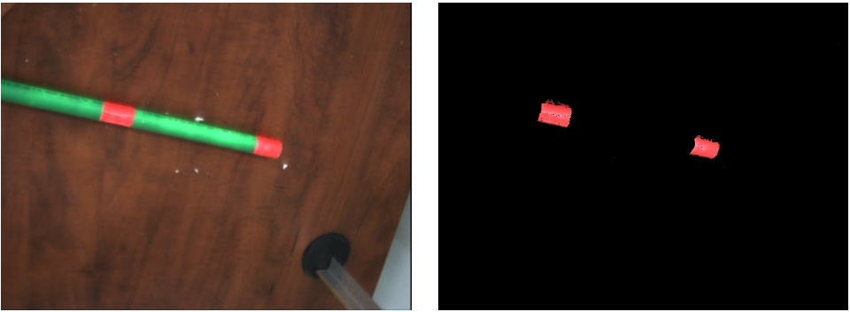
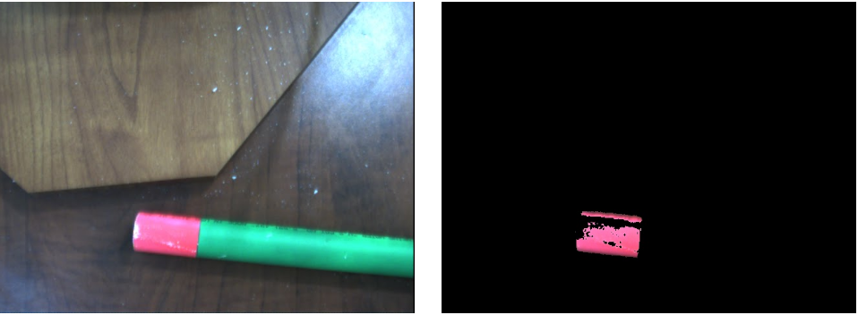

Overview
The task of finding the object is broken down into finding three distinct points on the object, from which we can fully characterize its location and orientation. Multiple visualizations are used to help understand the inner workings of the algorithm, and are presented below.
FINDING THE FIRST POINT
Initial State
The robot is initialized in the home position.
This image represents the robot's initial belief of where the first point it's looking for could be. The robot discretizes its search space (in this case, in 1cm x 1cm square cells) and builds a probability distribution over these discretized positions. When presented in this form of visualization, the scale goes from black being zero probability to white being the maximum probability in the distribution. The image is automatically scaled this way because without scaling, the whole image looks black. While this makes comparing points from two different pictures more difficult, (white doesn't always mean the same probability) it makes examining individual images much easier.
Capture 1
Informally, the robot moves in an attempt to maximize its probability of finding the point it's looking for. In the beginning, this corresponds to taking pictures of as large an unexamined area as possible.
On the left is the raw image taken by the robot. As you can see, brightness is highly skewed when we first start using the robot. Fortunately, our segmentation method is fairly robust to lighting differences. On the right is the image after color segmentation. Pixels that match our target color are kept, and all other pixels are turned black. Because the target point was not present in the image the robot took, the entire segmented image is rendered as black.
.Because the pipe did not appear in the captured image, the robot lowers its belief that the point is in any square that is covered by the image. (Notice how the robot uses hand twist to its advantage, to try to compensate for the lack of a sixth degree of freedom.)
Capture 2
Capture 3
Now that the robot has taken an image containing the target point, we can see the results of the image segmentation. Notice that more than one point is actually present in this image, but the robot is currently trying to find just one point. In order to accomplish this, one of the points is selected as the "true" point, and the rest of the algorithm proceeds as if only a single point was found. If you're interested in the exact "how" of this process, you can take a look at the source code or send me an email.
Now that the robot has found the point it's looking for, a different kind of update is done on the belief state. The probability of a location containing the point is based on the distance of the center of that location from the center of the detected blob. A probability distribution is used instead of immediately saying that we found the point in order to take into account the warping of the camera and any errors introduced by the computer vision processing.
Capture 4

Each belief state has a utility associated with it, which is equal to the negative uncertainty of the belief state. Uncertainty is defined as the weighted standard deviation of the location probabilities. When the uncertainty drops below a certain threshold, (currently set to 2cm) the robot considers the point found. This is the first belief state where the uncertainty is low enough for the robot to consider the first point accurately located.
Verification Image
Once a point has been found, the robot takes a verification image. This serves two purposes: to confirm that the point is where the robot believes it to be, and to provide a visual indication to observers.
After the close-up verification image, the probability distribution now appears as a distinct point.
FINDING THE SECOND POINT
Initial State
The robot begins searching for the second point from the location it ended in finding the first point.
Because the distance between adjacent points on the rod is known, we also know that a second point on the rod lies approximately that distance away from the first point, so we initialize our probability distribution with this knowledge.
Capture 1
The robot pulls back in order to get a wider view, covering more of the potential area.
Because the robot found the second point, it narrows down its belief.
Capture 2
The robot moves closer to reduce its uncertainty. Notice the strange joint angles the robot is using to get closer. Because the algorithm decides its own angles to use, configurations like this occasionally happen.
Verification Image
Because this point is more than 48 cm away from the base, a verification image cannot be taken. (48 cm is roughly the maximum distance away from the base the robot arm can move, constraining the z-axis to be at the proper level to take a verification image.)
FINDING THE THIRD POINT
Initial State

Because two adjacent points are already known, there are only two possible locations for the third point. (Informally, we've either found the two "leftmost" points, or the two "rightmost" points.) Normally, this shows up as two high-probability regions, but in this case the other region lies outside of the search bounds, so only one region is seen.
Capture 1
Capture 2
Although a highlighted line causes the image processing algorithm to identify the point as two separate blobs, (the other small, disconnected regions are below the minimum size threshold to be classified as a blob on their own) the "true point" selection process mentioned earlier means that only the larger of the two blobs is considered.
Verification Image
Now that the robot has found all three points, it can fully characterize the position and orientation of the pipe.